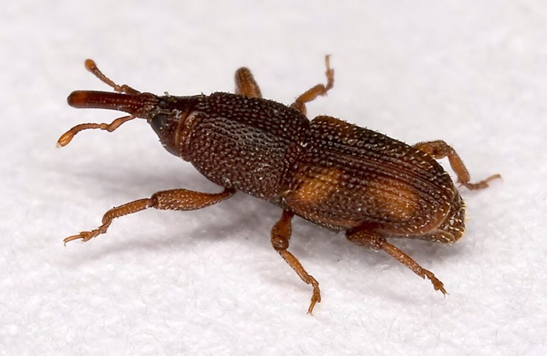

घुनRice Weevil
Sitophilus oryzae · Curculionidae · INS-0080

- Scientific nameवैज्ञानिक नाम
- Sitophilus oryzae (Linnaeus, 1763)
- Familyकुल
- Curculionidae
- Hindiहिंदी
- घुन
- Local namesस्थानीय नाम
- ghun, ghoon, anaj ka ghun, chawal ka ghun, rice weevil
- Status hereयहाँ की स्थिति
- native
- Movementआवागमन
- Resident, here all year
- IUCNIUCN
- not evaluated
- Reviewसमीक्षा
- audited and independently read
When to look कब देखें
Present all year.साल भर मौजूद।
Uses and possibilities उपयोग और संभावनाएँ
Drawn from the documented uses in the profile below, where each is labelled traditional, current or a research lead. All uses →
Tell it apart from इनसे अलग पहचानें
घुन / Rice Weevil
Sitophilus oryzae (Linnaeus, 1763) — Curculionidae
घुन — भंडारित चावल और दाल में छिपा सबसे आम कीट, जो गर्मी में तेज़ी से बढ़ता है। माँ चावल के दाने में सुराख़ करके अंडा देती है, और इल्ली अंदर ही खाकर बढ़ती है — जब तक चावल खाने के लिए निकाला जाता है, दाना खोखला हो चुका होता है। बिना रसायन के नीम की पत्तियों और राख़ से इसे रोका जाता आया है।
Quick Identification त्वरित पहचान
| Feature | Description |
|---|---|
| Size | 2.5–3.5 mm long; elongated oval |
| Colour | Brown to reddish-brown, with a slightly glossy appearance |
| Shape | Characteristic snout (rostrum) extending forward |
| Punctures | Body covered with regular punctate grooves on the elytra |
| Holes in grain | Single, clean round hole in the grain surface, with fine flour dust nearby |
| Infested grain | Chalky or discoloured appearance; interior hollow when cracked |
| Smell | Characteristic musty grain odour in heavily infested stores |
Field tip: Check stored grain by crushing a few grains between the fingers: hollow centres with weevils or white larvae inside mean infestation. Look for small round emergence holes on the surface. In warm weather, a grain store can smell distinctly musty.
हिंदी — कैसे पहचानें: भंडारित चावल या दाल में छोटे भूरे कीट, छोटी सुँड वाले। दाने में छोटा सुराख़। अगर दाना तोड़ो तो अंदर सफ़ेद इल्ली या कीट।
Morphology आकारिकी
Biometrics:
| Measurement | Range |
|---|---|
| Adult body length | 2.5–3.5 mm |
| Snout (rostrum) | About 0.4–0.5 mm of the total length |
| Egg | 0.7–0.8 mm, oval, whitish |
| Larva (1st to 4th instar) | 0.5–2.5 mm, cream-coloured, legless |
| Pupation period | 3–7 days inside the grain |
Adult: Brown, robust, with parallel-sided body. The snout is prominent, bearing the mouth at its tip. Wing covers (elytra) show distinct longitudinal rows of punctures, which is diagnostic. Legs are short and stout.
Larva: Legless, C-shaped, cream-coloured to white, with a brown head capsule. Lives entirely inside the grain, feeding and growing through four instars. By the time it pupates, the grain is largely hollow.
Egg: Laid individually in a cavity chewed into the grain by the female; the hole is sealed with a gelatinous plug.
हिंदी: भूरा कीट, लंबी सुँड, मजबूत। लार्वा सफ़ेद, बिना पैर, दाने के अंदर। अंडा दाने में छिपा।
Behaviour & Ecology व्यवहार और पारिस्थितिकी
The rice weevil is the most destructive insect of stored rice and other grains throughout the tropics. Both adults and larvae feed on grain: adults chew external surfaces and enter cavities, while larvae develop entirely within the grain, hollowing it from inside. A grain can support one larva's entire development. The insect thrives at temperatures above 20°C, with reproduction nearly ceasing below 15°C; in warm storage (25–30°C), a generation takes 25–30 days. A single breeding population can multiply exponentially: if a granary holds 100 grains and one is infested, that one weevil generates hundreds within three months. It spreads from grain to grain, container to container, and house to house through movement of infested grain.
Unlike many storage pests, the rice weevil flies and can infest living grain in drying fields and at harvest. It is the only storage weevil that does so routinely. This is how it reaches new stores each season.
हिंदी: दाने के अंदर जीवन भर रहता है — अंडा, इल्ली, प्यूपा सब अंदर ही। गर्मी में तेज़ी से बढ़ता है। उड़ सकता है, इसलिए सूखते चावल में भी संक्रमण कर देता है।
Life Cycle / Phenology जीवन चक्र
| Stage / season | Event |
|---|---|
| Egg, 3–5 days | Laid inside the grain; female seals the hole |
| Larva, 18–25 days | Four instars; hollows the grain |
| Pupa, 3–7 days | Inside the grain in a pupation chamber |
| Adult, 2–6 months | Emerges and immediately feeds; long-lived |
| Temperature | 15°C: reproduction nearly stops; 25–30°C: fastest development |
| In storage | Year-round; continuous overlapping generations in warm stores |
हिंदी: अंडे से वयस्क तक 25–30 दिन गर्म भंडार में; ठंड में धीरे। एक साथ सब पीढ़ियाँ।
Host Plants or Prey आहार
- Rice (white, brown, and paddy rice)
- Wheat, Wheat; barley; oats
- Pulses: pigeon pea, chickpea, lentil, gram
- Maize, sorghum, other cereals
- Dried foods: maize flour, wheat flour, bran
- Does not feed on living grain in the field; only in dried or stored grain
Predators / Natural Enemies शत्रु
- Parasitoid wasps: Anisopteromalus calandrae (a specialist; lays eggs in weevil eggs or larvae)
- Ground beetles: (Ophryastes, Pterolinus)
- Ants: will feed on exposed weevils but do not penetrate sealed containers
- Fungi: Beauveria and Metarhizium under high humidity
- Predatory mites: will consume eggs if present
Agricultural / Human Relevance कृषि प्रासंगिकता
The loss. Arguably the most important insect pest of stored cereals and pulses throughout Asia and Africa. Grain loss in poorly stored supplies can reach 50% or more within a year. Each damaged grain is rendered unusable for both food and seed.
Traditional and documented practices:
- Neem leaves: Fresh or dried neem leaves mixed with grain at the time of storage are documented to repel weevils and reduce infestation. The practice is traditional in many Indian households; ICAR and ZSI studies confirm effectiveness, though the active compounds are volatile and require replacement every 2–3 months (Chakraborti et al. 2014).
- Wood ash (राख़): Mixed with stored grain, ash prevents oviposition by females, possibly through abrasion and deterrence of sensory organs. Traditional use documented in eastern UP and recommended in ICAR extension bulletins.
- Sun-drying: Exposure of grain to direct sun for 1–2 days, turning frequently, kills eggs and young larvae. Most traditional method; still effective when grain is dried to <12% moisture before storage.
- Container type: Storage in sealed earthenware pots or bamboo baskets lined with neem leaves significantly reduces infestation compared to open storage (Srivastava et al. 2012).
Today. Modern pesticide-free storage protocols combine temperature control, moisture management, and protective plant materials. Chemical fumigation (phosphine) is used in commercial stores but not in household storage.
Research direction (a lead, not a result). Bioactive compounds from neem and other plants, volatile oils from traditional storage protectants, and the biology of Anisopteromalus calandrae as a biological control agent for small-holder stores.
हिंदी: सब से आम भंडार कीट। नीम की पत्तियाँ, राख़ मिलाना, धूप में सुखाना — सब काम करता है। ठंडा रखो, सूखा रखो, गहरे बर्तन में रखो।
Expected Locally स्थानीय रूप से अपेक्षित
Not a field record. Written from published accounts for eastern Uttar Pradesh. This is the commonest storage insect of eastern UP; any household with stored grain will have seen it.
अभी तक स्थानीय पुष्टि नहीं। भंडारित चावल या दाल रखने वाले घर में ही पाया जाता है।
Expected in every rice-growing household in Basti district, particularly in summer months and in grain stored for more than a month. The insect is entirely dependent on stored grain; it does not survive in the field. A photograph or sample from infested household grain, with the storage date and the crop, would confirm a local record.
Distribution वितरण
Global range: Pantropical; all grain-growing regions worldwide from 15°S to 45°N.
In India: Throughout the subcontinent; endemic in all grain-storing regions.
In Uttar Pradesh: Universal in stored grain; no region is free.
In Basti district / eastern UP: Present in every household granary and store; year-round; heavier in summer.
Research Questions शोध प्रश्न
Anyone can investigate these | कोई भी इन प्रश्नों की जाँच कर सकता है
- How long does neem leaf protection last before reinfestation? / नीम की पत्तियाँ कितने दिन तक सुरक्षा देती हैं? — Store identical grain samples with fresh neem, replaced monthly, unused neem, and ash; count weevils monthly.
- Which household materials (neem, ash, oil, salt) reduce oviposition most effectively? — Simple comparison in clear jars.
- Does sun-drying for different durations (1, 2, 3 days) reduce infestation equally? — Dry grain, allow infestation, compare.
- What is the colour of grain damage (discolouration) at each larval stage? — Dissect infested grains at weekly intervals.
- Are early-infested and late-infested grains equally damaged after three months? — Mark and follow.
Similar Species मिलती-जुलती प्रजातियाँ
| Species | How to tell apart | हिंदी | |
|---|---|---|---|
| Maize weevil (Sitophilus zeamais) | Larger (3.5–4.5 mm); four light spots on the elytra; preferred host is maize | मक्का का घुन, बड़ा, दाग़ वाला | |
| Granary weevil (Sitophilus granarius) | Flightless; no wings; smaller (2.5–3 mm) | भंडार घुन, बिना पंख | |
| [[pulse_beetle\ | Pulse beetle]] (Callosobruchus chinensis) | See separate profile; infests only pulses; larger holes; adults emerge quickly | ढोरा, दालों में, बड़े सुराख़ |
Field rule: Small brown weevil with a prominent snout, infesting rice and wheat in storage, with single round holes and hollow grains: rice weevil.
Taxonomy & Classification वर्गीकरण
Original description. Described by Linnaeus in 1763 in Centuria insectorum as Curculio oryzae. The genus Sitophilus was erected by Schönherr in 1838. Oryzae refers to rice (Oryza).
Subspecies. Monotypic — no subspecies are currently recognised.
Family and order placement. Order Coleoptera (beetles), family Curculionidae (weevils). The genus Sitophilus comprises cosmopolitan storage weevils with a characteristic snout.
Phylogenetic notes. The rice weevil belongs to the basal weevil lineage; genetically distinct from the maize weevil despite similar ecology. A 2019 genomic study identified symbiotic bacteria (Narnia siamensis) in the hindgut that aid starch digestion on this poor diet.
IUCN status rationale. Not evaluated. As a widespread agricultural pest of global importance, it is not assessed by the IUCN.
Photo Gallery फोटो गैलरी
Photos needed आवश्यक फोटो
- [ ] Adult weevil dorsal view (घुन ऊपर से)
- [ ] Infested rice grains with emergence holes (सुराख़ वाले दाने)
- [ ] Cross-section of grain with larva inside (दाने के अंदर इल्ली)
No photos yet — add field photos to media/species/rice_weevil/ and run node scripts/sync_photos.js.
References संदर्भ
- Linnaeus, C. (1763). Centuria insectorum. Holmiae. [original description, as Curculio oryzae]
- Schönherr, C.J. (1838). Genera et Species Curculionidum: cum Characteribus, Descriptionibus et Iconibus. Rostock. [genus]
- Chakraborti, M. et al. (2014). Effect of neem (Azadirachta indica) leaf powder on the oviposition behaviour of Sitophilus oryzae L. (Coleoptera: Curculionidae). Indian Journal of Entomology 76(2): 157–161.
- Srivastava, R.P., Das, B.C. & Samant, R. (2012). Storage of Cereals and Pulses for Food Security and Income Generation. ICAR–NCIPM, New Delhi.
- Indian Council of Agricultural Research (2019). Integrated Pest Management Package for Rice. ICAR–NCIPM, New Delhi.
- GBIF Occurrence Data — Sitophilus oryzae, India (2026).
Source file: species/fauna/insects/rice_weevil.md